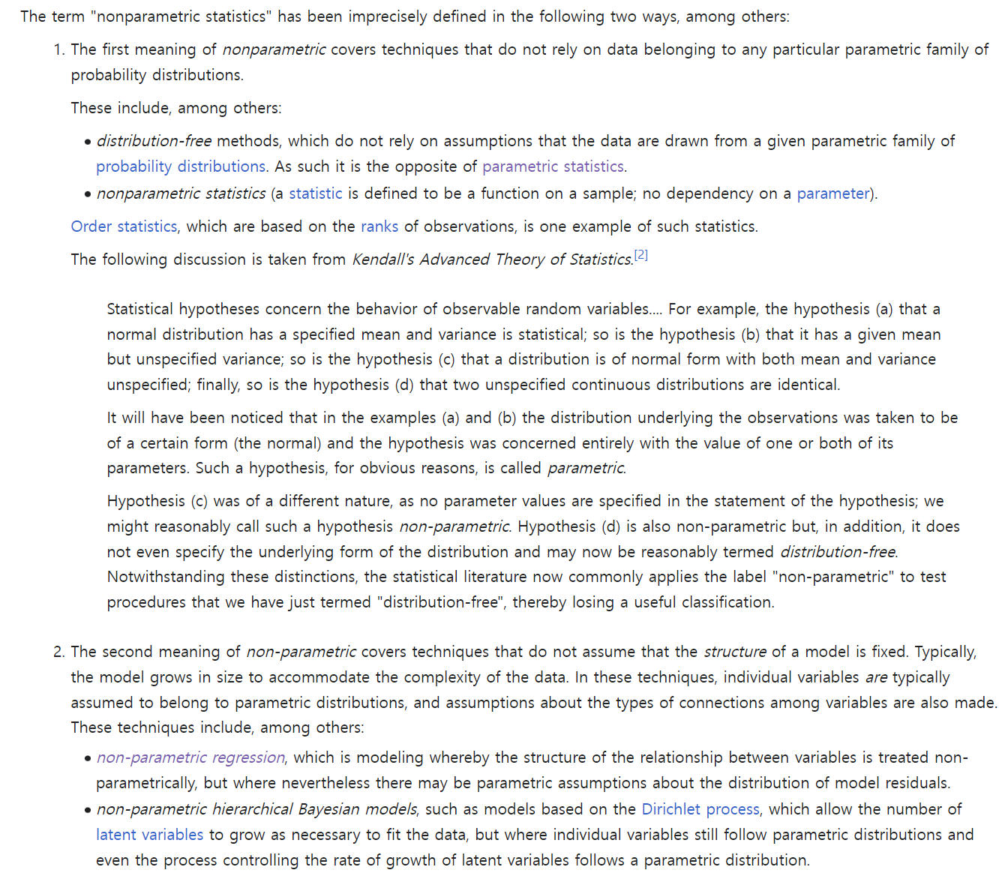
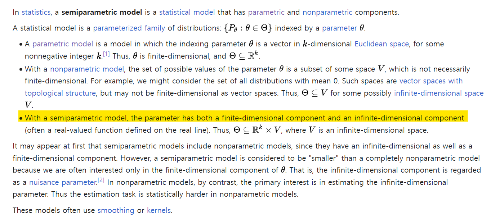

from IPython.display import IFrame
IFrame("https://upload.wikimedia.org/wikipedia/commons/5/5c/Standing_waves_on_a_string.gif" , title="Hilbert space", width="400" ,height = "400",frameborder="0")기저함수
ref: https://ko.wikipedia.org/wiki/%EA%B8%B0%EC%A0%80_%ED%95%A8%EC%88%98
기저 함수(basis function) 또는 바탕 함수란 함수 공간의 기저인 함수를 말한다. 모든 벡터 공간의 함수들을 기저 벡터의 선형결합으로 표시할 수 있듯이 모든 연속함수들은 기저 함수들의 선형결합으로 표시할 수 있다.
- 다항식 기저
실계수 2차 다항식에서 \(\{1, t, t2\}\) 은 기저 함수이다. 모든 실계수 2차 다항식은 \(a1+bt+ct2\)의 꼴로 표현되므로, 기저함수 \(1, t, \text{ and } t2\)의 선형결합으로 표시된다. \(\{(t−1)(t−2)/2, −t(t−2), t(t−1)/2\}\)의 세 함수들은 이차 다항식 다른 기저함수가 되며 라그랑주 기저라고 불린다. 체비쇼프 다항식의 처음 세 항도 2차 다항식의 다른 기저함수가 된다.
- 푸리에 기저
사인과 코사인은 제곱해서 적분가능한 함수들의 (정규직교) 샤우데르 기저가 된다.
예를 들어 다음 함수들의 모음은 \(\{\sqrt{2} \sin(2\pi nx) | n\in \mathbb{N}\} \cup \{\sqrt{2} \cos(2\pi nx) | n\in \mathbb{N}\} \cup \{1\}\) 은 \(L^2(0,1)\)의 기저를 이룬다.
2.1 선형모델
비선형 입출력 함수도 표현할 수 있도록 확장한 것이 파라미터에 대한 선형 모델이다.
\[f_{\theta}(x) = \sum_{j=1}^b \theta_j \phi_j (x) = \theta^\top \phi(x)\]
이때, \(\phi_j(x)\)는 기저 함수(basis function) 벡터 \(\phi(x) = (\phi_1(x), \dots, \phi_b(x))^\top\)의 \(j\)번째 요소, \(\theta_j\)는 파라미터 벡터 \(\theta = (\theta_1, \dots, \theta_b)^\top\)의 \(j\)번째 요소를 나타낸다. 또, \(b\)는 기저 함수의 수를, \(\top\)는 전치행렬을 나타낸다.이 모델은 파라미터 벡터 \(\theta\)에 대해서는 여전히 선형이지만, 예를들어 기저 함수로써 다음의 다항식이나,
\[\phi(x) = (1,x,x^2,\dots,x^{b-1})^\top\]
\(b=2m+1\)에 대한 다음의 삼각 다항식 등을 선택하면 복잡한 비선형 함수도 나타낼 수 있게 된다.
\[\phi(x) = (1, \sin x, \cos x, \sin 2x, \cos 2x, \dots, \sin ms, \cos mx)^\top\]
이 모델은 \(d\)차원의 입력벡터 \({\bf x} = (x^{(1)}, \dots, x^{(d)})^\top\)로도 자연스럽게 확장할 수 있다.
\[f_{\theta}(x) = \sum_{j=1}^b \theta_j \phi_j (x) = \theta^\top \phi(x)\]
다차원 입력 벡터 \(\bf x\)에 대하여 어떤 기저 함수를 택해야 할까?
승법모델 (multiplicative models)
1차원 기저 함수의 곱 으로 다차원 기저 함수를 구성한다.
\[f_{\theta}(x)=\sum_{j_1=1}^{b'}\cdots \sum_{j_d=1}^{b'} \theta_{j1,\dots, jd}\phi_{j1}(x^{(1)})\cdots \phi_{jd}(x^{d})\]
- \(b'\) : 각 차원의 파라미터 수
- 승법모델에서는 모든 1차원 기저함수의 조합을 따지므로 복잡한 함수를 표현할 수 있다.
- 그러나 전체 파라미터 수가 \((b')^d\)가 되므로 입력차원 \(d\)에 대하여 지수적으로 증가한다.
이렇게 차원에 대해 파라미터 수가 지수적으로 증가하는 현상을 차원의 저주 라 부른다.
가법모델(additive models)
1차원 기저 함수의 합 으로 다차원 기저 함수를 구성한다.
\[f_{\theta}(x) = \sum_{k=1}^d\sum_{j=1}^{b'} \theta_{k,j} \phi_j (x^{(k)}) \tag{2.1}\]
가법모델에서는 전체 파라미터 수가 \(b'd\)개가 되므로 입력 차원 \(d\)에 대하여 선형으로만 증가한다. 예를들면, \(b'=10\)이고, 입력차원 \(d=100\)일 때 전체 하라미터 수는 \(10\times 100 = 1000\)이 되어 컴퓨터로 쉽게 다룰 수 있는 범위를 유지한다.그러나 가법 모델에서는 1차원 기저 함수의 합밖에 표현할 수 밖에 없기 때문에 승법모델만큼의 표현력은 가지지 못한다.
2.2 커널모델
선형모델에서는 다항식이나 삼각다항식 등 기저 함수를 훈련 표본 \(\{(x_i, y_i)\}_{i=1}^n\)과 관계없이 결정 해 왔다.\(\Rightarrow\) “parametric model” 이라는 말이다.
기저함수의 설계에 입력 표본 \(\{x_i\}_{i=1}^n\)을 이용하는 커널 모델(kernel models) 을 소개한다.
커널모델은 이항 함수 \(K( , )\)로 나타낼 수 있는 커널함수를 써서 \(\{K(x,x_j)\}_{j=1}^n\)의 선형결합으로 정의된다.
\[f_{\theta}(x) = \sum_{j=1}^n \theta_j K(x,x_j) \tag{2.2}\]
커널함수로는 가우스 커널(Gaussian kernel) 이 자주 쓰인다.
\[K(x,c) = \exp \left(-\frac{||x-c||^2}{2h^2}\right)\]
- \(||\cdot||\) : \(l_2\) 노름(norm) // ex. \(||x|| = \sqrt{x^\top x}\)
- \(h\): 가우스 커널의 밴드 폭
- \(c\): 가우스 커널의 밴드 중심
가우스 커널 모델은 각 입력 표본 \(\{x_i\}_{i=1}^n\)에 가우스 커널을 배치하고, 각각의 높이 \(\{\theta_i\}_{i=1}^n\)을 파라미터로써 학습한다. 따라서 가우스 커널 모델은 훈련 입력 표본이 있는 위치의 근처에서만 함수를 근사한다. 승법 모델로는 입력공간 전체에서 함수를 근사하는 데 비해, 가우스 커널 모델로는 입력 표본 \(\{x_i\}_{i=1}^n\) 가까이에서만 함수를 근사하므로 차원의 저주로부터 영향을 줄일 수 있다.
각 입력 표본 \(\{x_i\}_{i=1}^n\)에 가우스 커널을 배치하고, 그 높이를 파라미터 \(\{\theta_i\}_{i=1}^n\)으로써 학습하는 것.
입력 표본 근처에서만 함수를 근사하면 되니까, 차원의 저주로부터 오는 어려움이 줄어드는 것이다.
실제로, 커널 모델의 파라미터 수는 입력 변수 \(x\)의 차원 \(d\)에 의존하지 않으며, 훈련 표본 수 \(n\)만으로 결정된다. 따라서 입력차원 \(d\)가 큰 경우에도 표본 수 \(n\)이 그렇게 많지 않으면 컴퓨터로 어렵지 않게 다룰 수 있다.
매우 많은 훈련 표본을 다루는 경우에도 입력 표본 \(\{x_i\}_{i=1}^n\)의 (이를테면 무작위로 선택한) 부분집합 \(\{c_j\}_{j=1}^b\)만을 커널 중심으로 사용하여 계산 부하를 줄일 수 있다.
\[f_{\theta}(x) = \sum_{j=1}^b \theta_j K(x,c_j)\]
커널 모델은 파라미터 벡터 \({\bf\theta}=(\theta_1, \dots, \theta_n)^\top\) 에 대해 선형인 성질 때문에 식 (2.1)의 파라미터에 대한 선형모델의 한 종류로 볼 수 있다.
그러나 기저 함수가 입력 표본에 의존적이기 때문에 커널 모델의 거동은 파라미터에 대한 선형모델과는 크게 달라진다. 이 때문에 통계학에서는 파라미터에 대한 선형 모델을 파라메트릭 모델(parametric models), 커널 모델을 넌파라메트릭 모델(non-parametric models) 로 구분하고 있다.
커널 모델의 또 다른 특징은 입력 \(\bf x\)가 벡터가 아닌 경우에도 비교적 쉽게 확장이 가능하다는 점이다.
커널모델 식 (2.2)의 경우, 입력 \(x\)는 커널 함수 \(K(x,x')\)에서 \(x\)와 \(x'\) 사이에만 존재하므로 두 개의 입력 \(x\)와 \(x'\)에 대한 커널 함수만 정의되어 있다면, 입력 \(\bf x\)는 어떤 값을 취해도 상관없다. 예를 들면, 입력 \(\bf x\)가 문자열, 트리, 그래프 등인 경우에대한 커널 함수가 제안된 바가 있다.
이렇듯 커널함수를 사용한 머신러닝 알고리즘은 커널법 이라 불리며 활발히 연구되고 있다.
Note
책의 정리에 따르면 파라메트릭 모델과 넌파라메트릭 모델의 구분은 다음과 같다. - 기저함수를 훈련 표본 \(\{(x_i, y_i)\}_{i=1}^n\)과 관계없이 결정할 수 있으면 파라메트릭 모델
- 기저함수가 커널모델과 같이 입력표본에 의존적이라면 넌파라메트릭 모델
위키버전
1. parametric

2. nonparametric
- ref: https://en.wikipedia.org/wiki/Nonparametric_statistics
- ref: https://en.wikipedia.org/wiki/Nonparametric_regression

3. semi-parametric

semiparametric regression
In statistics, semiparametric regression includes regression models that combine parametric and nonparametric models. They are often used in situations where the fully nonparametric model may not perform well or when the researcher wants to use a parametric model but the functional form with respect to a subset of the regressors or the density of the errors is not known. Semiparametric regression models are a particular type of semiparametric modelling and, since semiparametric models contain a parametric component, they rely on parametric assumptions and may be misspecified and inconsistent, just like a fully parametric model.
- Partially linear models
\(Y_i = X'_i \beta + g(Z_i) + u_i, \quad i=1,\dots,n\)
- \(Y_i\) : 종속 변수
- \(X_i\) : \(p\times 1\) vector of explanatory variables.
- \(\beta\) ; \(p\times 1\) vector of unknown parameters \(Z_i \in R^q\)
difference between a parametric and non-parametric model?
In a parametric model, the number of parameters is fixed with respect to the sample size. In a nonparametric model, the (effective) number of parameters can grow with the sample size.
In an OLS regression, the number of parameters will always be the length of β , plus one for the variance.
A neural net with fixed architecture and no weight decay would be a parametric model.
But if you have weight decay, then the value of the decay parameter selected by cross-validation will generally get smaller with more data. This can be interpreted as an increase in the effective number of parameters with increasing sample size.
Parametric model: 데이터가 특정 모델을 따른다고 가정하고, 샘플사이즈에 대해 파라메터가 고정되어 있음 (ex. OLS regression의 경우 파라메터 개수가 항상 \(\beta\)의 길이 더하기 \(1\))
nonparametric model: 파라메터의 수가 학습데이터의 크기에 따라 증가할 수 있다. (특정 분포를 따른다는 가정이 없기때문에 튜닝해야할 파라미터가 명확히 정해져 있지 않다.)
그러나 가중치 감쇠가 있는 경우 교차 검증을 통해 선택된 decay parameter의 값은 일반적으로 데이터가 많을수록 작아진다. 이는 표본 크기가 증가함에 따라 유효 모수 수가 증가한 것으로 해석할 수 있습니다.
To read
ref(블로그): https://vitalflux.com/difference-between-parametric-vs-non-parametric-models/
ref: https://vtechworks.lib.vt.edu/bitstream/handle/10919/107291/pvsregression.pdf?sequence=2
무한차원의 벡터공간의 기저: https://jjycjnmath.tistory.com/537
0710 update
- 파라메트릭
파라메트릭은 베이시스 숫자가 고정되어 있다.
베이시스를 데이터 숫자만큼 쓰면 일단 세미 아니면 넌파라메트릭
즉, 데이터의 숫자에 따라 베이시스가 변한다. (데이터=베이시스// 근데 우연히 데이터개수와 베이시스 개수가 같은 파라메트릭 모형도 있을 수 있겠지)
그럼 세미와 넌은 어떻게 구분하는데?
- 세미파라메트릭 / 넌 파라메트릭
베이시스를 뭘로 잡을지는 알고있음. (푸리에 변환할때 베이시스가 \(\sin, \cos\)인 것은 알고있는 것처럼)
베이시스를 무한개로 사용한다는 점에서 넌 파라메트릭과 유사
데이터 값에 디펜드하지 않는다는 점에서는 파라메트릭과 유사
세미는 베이시스를 선택할 때 데이터에 상관없이 곡선들의 포멧이 어느정도 정해져 있지만, 넌파라메트릭은 데이터를 무조건 따라간다.
- 선형함수의 모임 \(\to\) linear space –> 파라메트릭
- 다항함수의 모임 \(\to\) polinomial space –> 파라메트릭
- Hilbert space (\(\sin, \cos\)) –> 웬만하면 힐버트 스페이스
- 무슨 스페이스에 있는지 모르겠다 –> 넌파라메트릭
ex) Cox proportional hazards model
\(F(t) = 1-\exp\left(-\int_{0}^{t}\lambda_0(u) e^{\beta x}du\right)\)
- survival model이 non-parametric인 이유: https://bookdown.org/sestelo/sa_financial/the-semiparametric-model.html
- 힐베르트 공간 (정리중)
위키에 따르면 함수해석학에서 힐베르트 공간(Hilber space)은 완비 내적 공간이다. 유클리드 공간을 일반화한 개념이다.
- 지렁지렁 지렁이는 힐베르트 공간 (\(\sin, \cos\)은 원 위의 \(L^2\)함수의 힐베르트 공간)
생각해볼 것
- 시계열모델은 파라메트릭? 넌파라메트릭? 세미파라메트릭?
- AR(1)
AR(1) 모형은 자기회귀 모형 중 하나로, 현재의 관측값이 이전의 관측값에 의존하는 모형입니다. 이 모형은 파라메트릭 모형으로 분류됩니다. 파라메트릭 모형은 모수(parameter)에 기반하여 정의되는 확률 모형입니다. AR(1) 모형은 현재의 관측값이 이전의 관측값에 어떤 가중치를 곱한 후에 오차항을 더한 값으로 생성됩니다. 이 가중치 파라미터와 오차항의 분포를 모수로 갖습니다. - \(AR(1): Z_t = \phi Z_{t-1} +\epsilon_t\)
- AR(2)
- \(Z_t = \phi Z_{t-1} + \phi_2 Z_{t-2} + \epsilon_t\)
\(AR(p)\) 모델이 파라메트릭 모델이지만 베이시스와 데이터 수가 같은 경우로 봐도 될까?
- AR(?)
차수가 무한한 AR 모형은 일반적으로 세미파라메트릭 모형으로 분류됩니다. 세미파라메트릭 모형은 일부 파라미터에 대해서는 모수적 가정을 하지만, 일부 파라미터에 대해서는 비모수적으로 다루는 모형입니다.
차수가 무한한 AR 모형은 ARMA(infinity) 모형 또는 ARIMA(infinity) 모형으로도 알려져 있습니다. 이 모형은 모든 이전 관측값을 포함한 무한한 과거 관측값에 의존하는 형태로 정의됩니다. 하지만, 실제로 무한한 개수의 과거 관측값을 사용하는 것은 계산상의 한계로 불가능합니다. 따라서, 실제로는 유한한 개수의 과거 관측값을 사용하여 AR(p) 모형으로 근사화하는 방식으로 모델링됩니다.
따라서, 차수가 무한한 AR 모형은 일부 파라미터에 대해서는 모수적 가정을 하지만, 사용되는 실제 과거 관측값의 개수에 따라서는 비모수적으로 다루는 세미파라메트릭 모형으로 볼 수 있습니다.
- ChatGPT
- non-parametric이다?
반면에, 제가 존재하는 ChatGPT는 넌파라메트릭 모형에 해당합니다. 넌파라메트릭 모형은 모수적 제약이 없는 모형이며, 데이터에 대한 분포 가정을 하지 않습니다. 대신, 데이터의 패턴과 관계를 학습하고 이를 기반으로 예측이나 생성을 수행합니다. GPT는 사전 학습된 신경망 모델로, 데이터의 통계적 구조나 확률 모형에 대한 가정을 하지 않고 문장 생성 및 자연어 이해 작업을 수행합니다.
- parametric이다?
ChatGPT는 파라메트릭 모형입니다.
ChatGPT는 OpenAI에서 개발한 대규모 언어 모델인 GPT-3.5 모델을 기반으로 합니다. GPT-3.5 모델은 파라메트릭 모형으로, 확률분포의 형태와 관련된 모수를 가정하고 있습니다. 이 모델은 많은 양의 텍스트 데이터로 사전 훈련되었으며, 주어진 입력에 대해 조건부 확률분포를 모델링하고 응답을 생성합니다. ChatGPT는 이러한 모델을 기반으로 대화를 수행하는 데 사용됩니다.
반면에 세미파라메트릭 모형은 일부 모수를 가정하고, 다른 부분은 비모수적 방법으로 모델링하는 모형입니다. 예를 들어, 로그-선형 모형은 세미파라메트릭 모형의 한 예입니다. 하지만 ChatGPT는 그 자체로는 세미파라메트릭 모형이 아닌 파라메트릭 모형입니다.
- 답변이 계속 달라지는데??